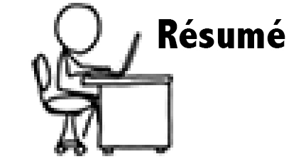

<!DOCTYPE html>
<html>
<head>
    <title>Kristopher's Resumé</title>
    <link rel="shortcut icon" href="/favicon.png">
    <meta http-equiv="Content-Type" content="text/html;charset=utf-8">
    <meta http-equiv="refresh" content="0; url=https://kristopherwindsor.com/resume/kristopherwindsor.pdf" />
</head>
<body>
    <!--
    Use case 1)
    When this page is added to a LinkedIn profile as a media link,
    LinkedIn will scrape the JPG and show that image as the media.

    Use case 2)
    But then when someone actually clicks on the media link, we want them
    to immediately get to the PDF and not see that JPG at all.

    This page is configured for use case #2.
    In order to configure this page for use case #1,
    1) uncomment below 
    2) change the above redirect from 0 seconds to 10 seconds
    -->

    <!--
    <a href="https://kristopherwindsor.com/resume/">
        
    </a>
    -->
</body>
</html>
